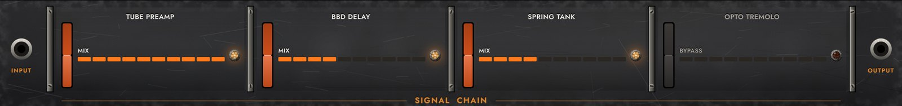

The rack
Four machines, one signal path
Each block sits on its own card. The amber bar is a fader for that block's mix: pull it to zero and the block switches off and costs no CPU. Change the order of the chain in EDIT, and the sound glides from one setting to the next.
- Mix fader per block
- 0 % CPU when a block is off
- Re-orderable chain